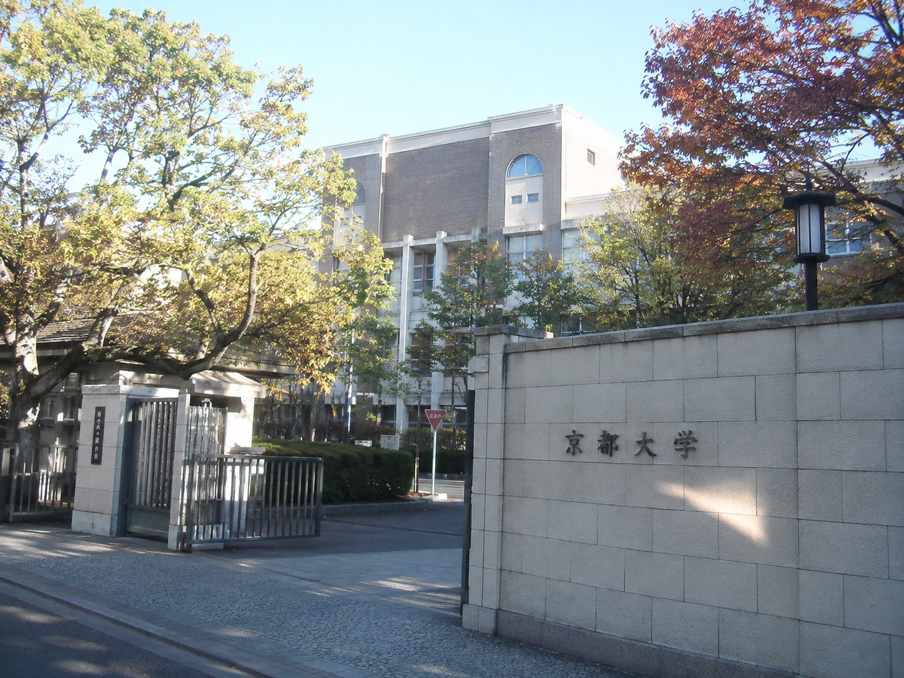

大学入学共通テストには、病気や障害などによって通常の方法では受験に支障がある人のために、「受験上の配慮」という制度があります。
試験時間の延長や座席の調整など、必要に応じた配慮を申請できる制度です。
しかし、制度を知らなかったり、申請期限を過ぎてしまったりすると、必要な配慮を受けられない可能性があります。
僕は、利用できる制度は積極的に活用してほしいと考えています。
今回は、2027年度共通テストの公式案内をもとに、受験上の配慮の内容や申請方法、注意点を解説します。

共通テストの受験上の配慮とは？ どんな人が対象？
受験上の配慮は、病気や負傷、障害などによって通常の方法では受験に支障がある人が、必要な配慮を申請できる制度です。
大学入試センターでは、例えば次のような配慮事項を案内しています。
- 試験時間の延長
- 拡大文字問題冊子の使用
- 試験室や座席の調整
- リスニングに関する配慮
- 必要な機器の持参・使用
ただし、希望すれば必ず認められるわけではありません。申請内容や書類をもとに審査が行われ、配慮事項が決定されます。
必要な配慮は一人ひとり異なります。
「自分も対象になるのだろうか」と迷っているなら、自己判断で諦めず、まずは大学入試センターの公式案内を確認してほしいと思います。
受験上の配慮の申請期限はいつ？
特に注意してほしいのが、申請期限です。
2027年度共通テストでは、次の日程で申請を受け付けていました。
| 区分 | 申請期間 |
|---|---|
| 第1期 | 2026年7月1日〜8月28日（必着） |
| 第2期 | 2026年8月31日〜10月2日（必着） |
※消印有効の期限は、第1期が8月26日、第2期が9月30日でした。
第1期に申請すると、共通テストの出願期間中に審査結果を確認できる日程になっていました。
大学入試センターも、審査に時間がかかる場合があるため、できるだけ第1期での申請を案内しています。
2026年11月21日現在、2027年度試験の通常の申請期間は終了しています。
次年度以降に受験する人は、受験する年度の案内が公表されたら、早めに期限を確認してください。
受験上の配慮の申請方法と必要書類
2027年度の申請では、基本的に次の3種類の書類が必要です。
- 受験上の配慮申請書
共通テスト出願サイトのマイページから取得します。希望する配慮事項などを記入する書類です。
- 診断書
医師が診断名や現在の状態、配慮が必要な理由などを記載します。
- 状況報告書
学校などで、これまでどのような配慮を受けてきたかを記載する書類です。
希望する配慮によっては、追加資料が必要になる場合もあります。
また、2027年度は受験上の配慮の申請を郵送でのみ受け付けています。
共通テストの出願がWeb方式だからといって、配慮申請もオンラインで完結するわけではありません。
さらに、配慮申請と共通テストへの出願は別の手続きです。配慮申請だけで出願が完了するわけではないので注意してください。
診断書は早めに準備しよう
申請書類の中でも、早めに準備したいのが診断書です。
医療機関の予約や書類の作成には時間がかかる場合があります。
また、2027年度の申請では、大学入試センターが指定する年度の様式を使う必要があります。病院独自の診断書では申請できません。
診断書が間に合わない場合でも、申請書だけを先に送ることは認められていません。
必要な書類をそろえたうえで提出する必要があります。
状況報告書についても、学校などとの連携が必要です。
申請期限が迫ってから慌てないために、早めに準備を始めましょう。
分からないことがあれば、大学入試センターへの事前相談も利用できます。
学校任せにせず、自分から情報を取りに行こう
ここで、僕が最も伝えたいことがあります。
受験に必要な情報を、学校任せにしないでほしいのです。
もちろん、学校の先生は大切な相談相手です。
しかし、すべての先生が受験上の配慮制度について詳しいとは限りません。
自分が切り開こうとしている進路なのですから、必要な情報は自分でも調べ、分からなければ問い合わせる姿勢を持ってほしいと思います。
そのうえで、学校の先生にも早めに相談してください。
「受験上の配慮を申請したいと考えています。必要な書類や手続きについて協力をお願いします」
そう伝えておけば、学校側も準備を進めやすくなるでしょう。
また、関連する情報が入ったら教えてもらえるよう、お願いしておくこともおすすめします。
自分で情報を集めることと、周囲の人に協力してもらうことは、どちらも大切です。
必要な制度は、積極的に利用してほしい
僕は、使える制度は最大限活用してほしいと考えています。
受験上の配慮は、ほかの受験生より有利になるための制度ではありません。
通常の試験方法では受験に支障がある人が、必要な配慮を受けるための制度です。
申請をためらう必要はないと思います。
もちろん、希望した配慮が必ず認められるわけではありません。それでも、必要な配慮があるなら、まずは制度を調べ、相談してほしいのです。
試験勉強を頑張ることと同じように、自分が受験しやすい環境を整えることも大切だと考えています。
申請期限を過ぎてしまったら？
2027年度共通テストの通常の配慮申請期間は、すでに終了しています。
ただし、共通テストへの出願後に、不慮の事故や発病、症状の悪化などで新たに配慮が必要になった場合には、別の申請手続きがあります。
これは、通常の申請期限を過ぎても自由に申請できるという意味ではありません。
該当する場合は、大学入試センターの案内を確認し、受験票に記載された「問合せ大学」へ電話で相談してください。申請期間は2026年12月10日から2027年1月12日17時までです。
まとめ｜制度を知り、早めに行動しよう
共通テストの受験上の配慮を希望する人は、次の3点を確認してください。
- 受験年度の申請期限を確認する
- 診断書などの必要書類を早めに準備する
- 学校任せにせず、自分から情報を集める
必要に応じて、学校の先生や大学入試センターにも相談しましょう。
僕は、利用できる制度があるなら、積極的に活用してほしいと思います。
「知らなかった」「間に合わなかった」という理由で、必要な配慮を受ける機会を逃してほしくありません。
受験勉強だけでなく、受験環境を整える準備にも早めに取り組んでほしいと思います。